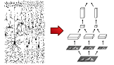

|  |
CNS: Cortical Network Simulator Programming Guide |
cns_build to compile a package.
| Problem | Remedy |
| Can't find the NVIDIA compiler, libraries, etc. | Have you followed all the installation instructions? |
| Can't find the package you are trying to compile. | cns_build locates a package by finding the directory containing the function package.m. This directory must be in the MATLAB path for that to occur. |
| Object file is locked. | You may have a cns session open. Try:
If that doesn't work, restart MATLAB.cns done all |
cns('init') to initialize a network model on the GPU.
| Problem | Remedy |
| Can't load NVIDIA libraries. | Have you followed all the installation instructions? |
| No device (GPU) available. |
There are several possibilities:
|
| Not enough memory. |
The most likely cause is that your model is simply too big to fit into GPU memory. Try running cns('test') to see how much memory your model requires. This will give you an idea of how much smaller your model needs to be to work. Note that different GPUs have different amounts of memory.
If you've run |
cns('run') or cns('step').
| Problem | Remedy |
| Kernel launch errors. | This happens when a kernel's block size -- the number of cells it tries to compute at once -- is too large. Try making it smaller. The maximum block size you can use depends on two things:
|
| Not enough memory for outputs. | This typically happens when you're trying to use cns('run') to compute a large number of iterations and return a large quantity of data for each iteration. The default behavior is for CNS to collect the entire result in GPU memory and then transfer it back to the CPU all at once when all the iterations are complete. You can adjust this by using the buffer size parameter, or if you don't need data for every iteration, the sample rate parameter.
|
cns('get') to retrieve the contents of variables between iterations or steps.
PRINT or ERROR statements in your kernel code. Both of these only work in debug mode.